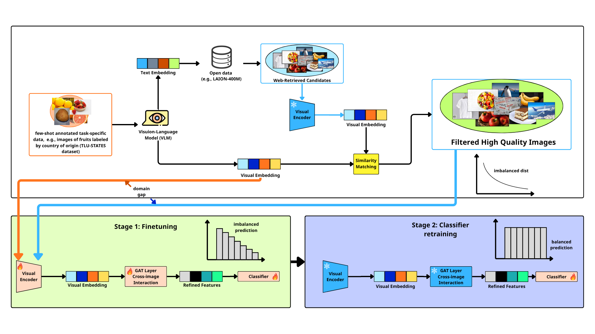

Results

Performance comparison on agricultural datasets under few-shot settings. The proposed Agri-VLG consistently outperforms baselines.
Deep learning has achieved remarkable success in computer vision, yet the scarcity of labeled data in specialized fields like counterfeit agricultural product identification remains a significant challenge. While humans can distinguish authentic goods from fakes using prior knowledge, machines often struggle with extreme data imbalance and domain gaps in task-specific datasets like TLU-States. To address this, we propose Agri-VLG, a robust framework that synergizes few-shot annotated data with open-source knowledge for precise identification. The architecture incorporates a Vision-Language Model (VLM) to retrieve high-quality web candidates from open data, effectively bridging the domain gap between generic imagery and agricultural tasks. To exploit the relationships between retrieved samples and target images, a Graph Attention Network (GAT) layer is employed to facilitate cross-image interaction and refine visual features. Our approach follows a two-stage process: Stage 1 involves finetuning to align representations, while Stage 2 focuses on classifier retraining to shift from imbalanced to balanced predictions. Extensive experiments on agricultural benchmarks demonstrate that Agri-VLG significantly outperforms state-of-the-art methods, proving that graph-based refinement and external knowledge-guided retrieval are highly effective for detecting counterfeit products in few-shot scenarios.

The overall architecture of Agri-VLG, featuring VLM-driven retrieval, GAT-based refinement, and a two-stage training strategy for balanced agricultural product identification.
Performance comparison on agricultural datasets under few-shot settings. The proposed Agri-VLG consistently outperforms baselines.
@article{tran2024agrivlg,
title = {Agri-VLG: Robust Identification of Counterfeit Agricultural Products using Few-Shot Annotated Data and Open-Source Knowledge},
author = {Tran, Dat and Tran, Vu Quang Huy and Nguyen, Manh Dung and Vu, Hoai Nam},
journal = {IEEE Access},
year = {2026},
doi = {10.1109/ACCESS.2026.3712494}
}